Citizens: Group Picture: Sikhs 1910. Studio group photo; their turbans are distinctive but not otherwise identifiable. No more is known about the group. Source:California State Library Photograph Collection Neg. GL#1912.
Most of the photos displayed here illustrate mainly Sikh immigration owing to the fact that early settlement from Punjab was predominantly Sikh. In the early part of this century all immigrants from India were indiscriminately called "hindoo" or "hindu" regardless of religious affiliation. The term "hindoo" was also sometimes used in a pejorative sense for anyone from that continent. Permission to reproduce any of these photographs must first be obtained from the archive shown in the photo credits.
Please contact T. S. Sibia
Return to home page
Click on thumbnail to obtain a larger image.
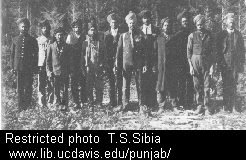
ca. 1900. Sikh railroad workers, Washington (state). (Oregon
Historical Society. #OrHi 52788)
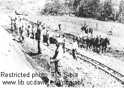
ca. 1909. Pacific & Eastern Railroad construction. (Photo
courtesy of the Southern Oregon Historical Society, Medford, Oregon. Photo #1603.)
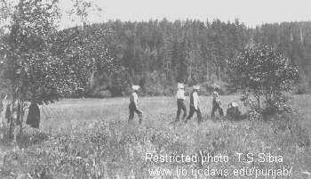
ca. 1909. Workers on the Pacific & Eastern Railroad construction.
Lunch break? (Photo courtesy of the Southern Oregon Historical Society, Medford,
Oregon. Photo #1706.)
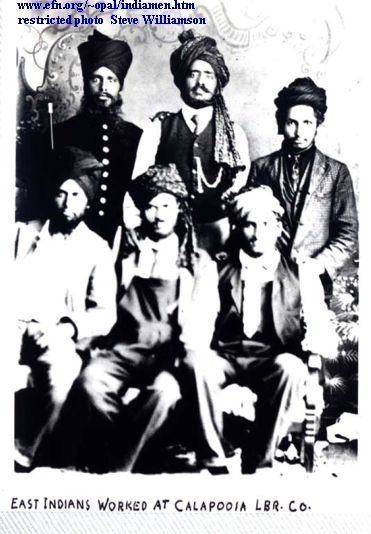 ca. 1909. Sikhs from India at the Calapooia Lumber Company, Crawfordsville, Linn County, Oregon, 1905-1915. (Crawfordsville is about 30 miles north of Eugene, Oregon). (Photo courtesy of Stephen Williamson www.efn.org/~opal/indiamen.htm)
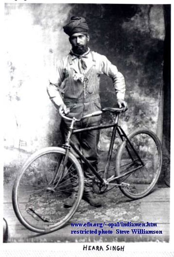 ca. 1909 Crawfordsville, Linn County, Oregon, 1905-1915. Man on bicycle. (Crawfordsville is about 30 miles north of Eugene, Oregon). (Photo courtesy of Stephen Williamson www.efn.org/~opal/indiamen.htm)
Citizens: Group Picture: Sikhs 1910. Studio group photo; their
turbans are distinctive but not otherwise identifiable. No more is known about
the group. Source:California State Library Photograph Collection Neg. GL#1912.
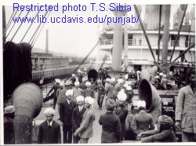
1913. SS Minnesota, Seattle, June 23, 1913. (Photo courtesy of Washington State Historical Society, Tacoma. Photo by Curtis, negative #27255)
| 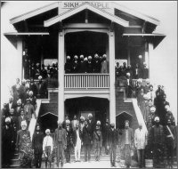 |
|
1915. Sikh Temple (Gurdwara) in Stockton,
California, dedicated November 21, 1915. This photo was taken by V. Covert Martin
and appeared in the Stockton Record November 22, 1915, showing the new
home of the Stockton Temple (Gurdwara).This
structure became the first permanent Indian religious building in the U.S. Photo
courtesy of the Holt-Atherton Dept., University of the Pacific Library, Stockton,
California. Click on this image to obtain a larger magnification.
(Photo courtesy of Dr. Harbhajan S. Shergill) |
El Centro Gurdwara |
||
|---|---|---|---|
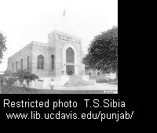.
1929. Sikh Temple (Gurdwara)
in Stockton, California, which replaced the earlier building dedicated in 1915.
Photo courtesy of the Bank of Stockton.
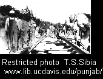
1908. Immigrant laborers on the Western Pacific RR near Quincy
JCT, California. (Photo courtesy Plumas County Museum, Quincy, CA, PCM 4-1984).
Click on thumbnail to obtain a larger image.
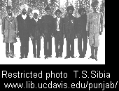
1906. Immigrant track workers building Western Pacific RR. Notice the medals,
probably awarded by the British government or military, and worn as was the
custom by new immigrants. Medals and insignia were later disabused
by Sikhs. The meagre Christmas tree shows that they still retained some sense
of humor. (Photo courtesy Plumas County Museum, Quincy, CA.) .
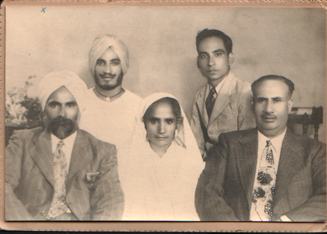
Click on thumbnail to obtain a larger image.

Click on thumbnail to obtain a larger image.
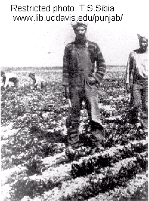
1930. (?) Turbaned farmer. (Source: Takaki
in Bibliography.
| 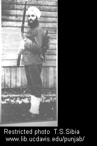 | 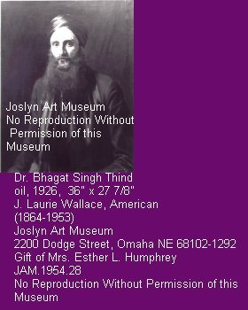 |
| Bhagat Singh Thind, a native of Punjab entered the United States in 1912. Thind was attending college and working in a lumber mill when he was inducted into the US army. He was honorably discharged from the army on 16th December 1918. In 1920 Thind applied for citizenship which was granted to him in Oregon by the district court. A naturalization examiner objected to the court's decision and sought for Thind's citizenship cancellation on the grounds that Thind was not white. An appeal was taken to the "Ninth circuit court of appeals" and the U.S. Supreme Court decided against granting Naturalization to Thind on February 10th 1923. It was a landmark decision in United States Vs Bhagat Singh Thind. | |
Click on thumbnail to obtain a larger image.
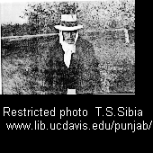
Thakarar Singh Johl, 1878-1978, also known as Tuly Singh Johl, came from Canada to the U.S. in 1906 to work on the railroad. At age 99 he was still driving an automobile and worked on his Yuba City, California peach farm until his death in 1978.
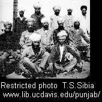
c. 1916. Immigrants on Angel Island. Photograph of a group
of Sikh immigrants wearing turbans. Posed beside the covered recreation yard
to the east of the detention barracks. (Photo courtesy of California Department
of Parks and Recreation. Angel Island State Park Files. DPR Photo File #311-86.)
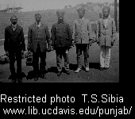 c. 1916. Immigrants at Angel Island Immigration Station. Group of immigrants photographed in an open area between the detention barracks and the covered recreation yard. Support posts for the covered recreation yard are in the upper right corner of the thumbnail. (Photo courtesy of California Department of Parks and Recreation. Angel Island State Park Files. DPR Photo File #311-71.)
Click on thumbnail to obtain a larger image.
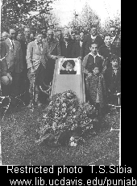.
c 1945. Funeral of Utam Singh, Yuba City, California. Although most of the outward signs of faith were practiced among only the most religious of the early Sikh immigrants, like their fellow Muslims they were strict about death rituals. When a Sikh died, a funeral photograph was taken of the deceased wearing a turban, whether or not he had worn one in the United States. The photo was then sent home to assure family members of the man's orthodoxy.
(Photo courtesy of Isabel Singh Garcia, Yuba City, California.)
Click on thumbnail to obtain a larger image.
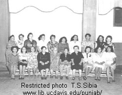
1947. Wives and daughters of Punjabi immigrants during the first India Independence Day celebrated in the Yuba City-Marysville, California, area. With few exceptions, all the wives were of Mexican descent (Photo Courtesy of Isabel Singh Garcia, Yuba City, California.)
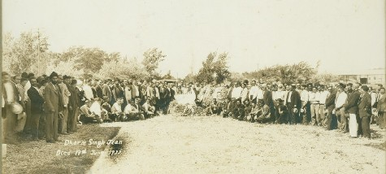
Funeral of Dharm Singh Jian in Arizona. Died June 19, 1937.
Source: Hari Singh Everest (Yuba City).
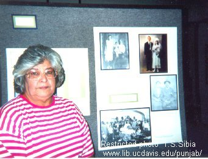
1996. Mrs. Isabel Singh Garcia Mrs. Garcia is very active in documenting and promoting Hindu-Mexican heritage in the Yuba City and Marysville, California area. (Photo by author T.S. Sibia, taken at the Community Memorial Museum of Sutter County.)
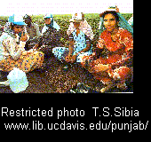
1989. Sikh field workers, Huron, California. (Photo from California Farmer, "Ethnic Farmers", 270(2):9, by Richard Steven Street,
Jan. 21, 1989. Permission requested.)
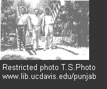
Author T.S. Sibia, (on the right) and friends working in peach orchards in Yuba City-Marysville area, California.
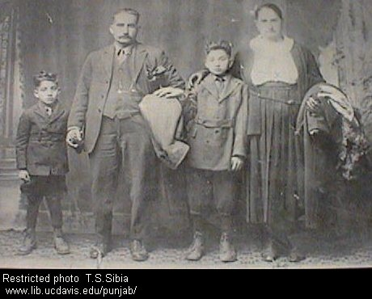
(c.1927)Dhana Singh Poonian family.
(l.-r.): Paritem S. Poonian, Dhana S. Poonian, Dalip S. Poonian, Raj Kaur Poonian.
D.S. Poonian came to California in 1906. He eventually settled in Loomis, California, where he established the Poonian Nursery in 1911. In 1923 Poonian returned to India to marry Raj Kaur, his brother's widow. He brought her and her two sons back to California. Raj Kaur Poonian's son Paritem married
Janie Diwan, the daughter of a successful Arizon farmer, Diwan Singh.(Photo courtesy of
Mr. and Mrs. Donald and Thanti Powers.)
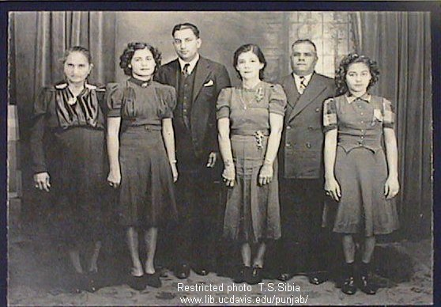
(1939) Marriage portrait of Janie S. Diwan and Paritem S. Poonian. (l.-r.): Raj Kaur Poonian, Janie S. Diwan, Paritem S. Poonian, Isabel (Mrs. Diwan) Singh, Diwan Singh, Nora Singh.
(Photo courtesy of Mr. and Mrs. Donald and Thanti Powers.)
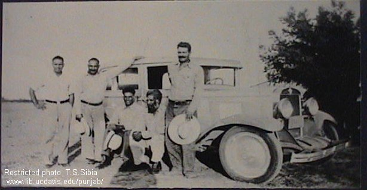
(1938) Sutter County, California, field workers.
(l.-r.) Kartar S. Bahawal, Lal S. Rai, Kitshen Rahana, Gurbachan S. Purewal, Chanchal S. Rai. (Photo courtesy of Mary S. Rai.)
Chanchal Singh Rai left home in Boparai, Punjab, India with his cousin Lal Singh Rai in 1927 to work their way to America through the Fiji Islands, New Zealand, Panama, Central America and Mexico.
Chancal left behind his wife and two small sons. Due to immigration laws and other difficulties, Bhani Kaur Rai was unable to come to the
U.S. until 1989, when she was reunited with her husband. Chancal Singh Rai was a farmer and philanthropist who became a major donor to Fremont and Rideout Medical Centers and dontaed land for the Sikh Temple on Bogue Road (Yuba City, California). He helped many East Indian students attent Yuba College (California) and loaned money to others to start businesses.
Congregation I March 1966 |
Congregation II 1966 |
|---|
Congregation IV July 196 |
Congregation III |
|---|
Inside temple |
Marriage Party |
|---|
Small party with visitor June 1965 |
Stockton temple with congregation |
|---|
Visitor II June 196 |
Visitors I |
|---|
|
PunaSinghFamily. Male members of the Puna Singh Family, Yuba City, California, c. 1945 |
|---|


{kind=link}
{kind=link}
{kind=link}
{kind=link}
{kind=link}
{kind=link}
{kind=link}
{kind=link}
{kind=link}
{kind=link}
{kind=link}
{kind=link}
{kind=link}
{kind=link}
{kind=link}
{kind=link}